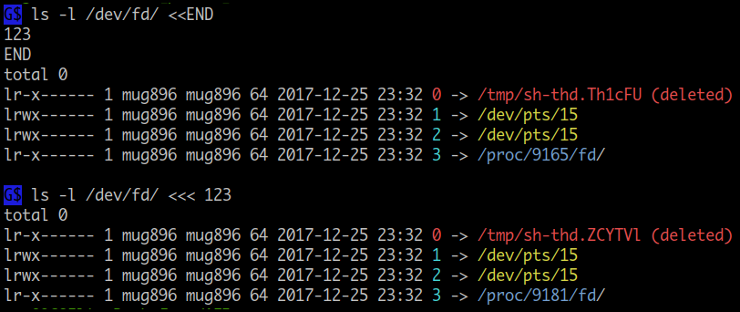
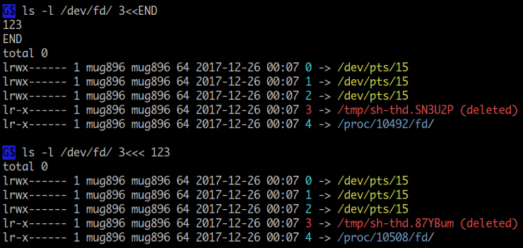

<< , <<<
<< ( here document ), <<< ( here string ) 은 실행 중에 임시 파일을 만들어서 stdin 에 연결합니다. 그러므로 echo 명령 대신에 cat 명령을 사용합니다. 아래는 ls -l 명령의 인수로 here docuemnt 를 사용하였는데 stdin 입력으로 sh-thd.Th1cFU 임시 파일이 사용된 후 삭제된 것을 볼수가 있습니다.
bash-5.1 버전 부터는 작성 내용이 pipe buffer size 보다 작을 경우는 pipe 를 이용하고 그보다 클 경우는 이전과 같이 임시파일을 사용합니다.
sh에서는<<만 사용할 수 있습니다.

$ stat -L -c "%F" /dev/stdin <<EOF
123
EOF
regular file
$ stat -L -c "%F" /dev/stdin <<< 123
regular file
<<, <<< 왼쪽에 공백없이 붙여서 file descriptor 를 사용할 수 있습니다.

$ 3<<< hello <&3 cat # <&3 는 0<&3 와 같은 것임
hello
$ 3<<END cat /dev/fd/3
> hello
> END
hello
---------------------------------------------------
$ exec 3<<END
> 111
> 222
> END
$ ls -l /proc/$$/fd/
total 0
lrwx------ 1 mug896 mug896 64 2018-01-05 18:51 0 -> /dev/pts/15
lrwx------ 1 mug896 mug896 64 2018-01-05 18:51 1 -> /dev/pts/15
lrwx------ 1 mug896 mug896 64 2018-01-05 18:51 2 -> /dev/pts/15
lrwx------ 1 mug896 mug896 64 2018-01-05 18:51 255 -> /dev/pts/15
lr-x------ 1 mug896 mug896 64 2018-01-05 18:51 3 -> /tmp/sh-thd.0bYLMF (deleted)
$ cat /dev/fd/3
111
222
$ cat /dev/fd/3
111
222
$ cat <&3
111
222
$ cat <&3
$ # <&3 는 파일 포지션이 이동하므로
$ exec 3>&-
-----------------------------------------
# 파이프로 인해 stdin 이 사용 중일 경우 다음과 같이 하면 됩니다.
$ command ... | sed -f /dev/fd/3 3<<EOF
...
EOF
$ command ... | awk -f /dev/fd/3 3<<\EOF
...
EOF
$ echo ' Robbins , "1234 Street, NE" , MyTown ,USA, USA ' | perl -n /dev/fd/3 3<<\@
chomp; my %seen;
print "<", $_, ">", "\n" foreach # 7. 추출한 값에 '<', '>' 를 추가해 출력
sort { $b cmp $a } # 6. 역순으로 정렬
map { s/([0-9]+)/$1 * 2/e; $_ } # 5. 숫자에는 * 2 를 실행
grep { ! $seen{$_}++ } # 4. 중복 항목은 제거
map { s/^\s+|\s+$//g; $_ } # 3. 항목 앞, 뒤 공백 제거
grep { /\S/ } # 2. empty 항목은 제거
split /,|("[^"]*")/; # 1. ',' or "..." 로 필드를 분리
@
<USA>
<Robbins>
<MyTown>
<"2468 Street, NE">
<< here document
sed, awk 같은 명령을 작성할 때는 quotes 을 사용하므로 동일한 quotes 을 출력에 사용하려면 escape 과정을 거쳐야 하는데요. here document 를 이용하면 파일에서 작성하는 것과 같이 quotes 을 escape 할 필요가 없습니다. 또한 본문 내용 중에 변수를 사용할 수도 있어서 여러모로 편리한 기능입니다.
here document 는 본문의 처음과 끝을 별도의 레이블로 구분하는데 이때 사용되는 구분자 명은 임의로 만들어 사용할 수 있습니다. 한가지 주의할 점은 마지막 줄은 구분자 외에 다른 문자가 와서는 안됩니다 ( 공백도 안됨 ). 구분자를 quote 하거나 escape 하면 변수확장, 명령치환이 일어나지 않습니다.
# quotes 을 escape 하지 않고 사용할 수 있어서 echo 명령 대신에 출력에 사용하기 좋습니다.
# 예) 명령의 help 메시지 작성
$ cat <<EOF
> this is "double quotes"
> this is 'single quotes'
> EOF
this is "double quotes"
this is 'single quotes'
# 기본적으로 본문에서 변수확장, 명령치환이 일어난다.
$ AA=100
$ cat <<ABC # 구분자 ABC
> here $AA
> document $(date +%D)
> ABC
here 100
document 07/23/15
# 구분자를 quote 하거나 escape 하면 변수확장, 명령치환이 발생하지 않습니다.
$ AA=100
$ cat <<'END' # 또는 <<\END
> here $AA
> document $(date +%D)
> END
here $AA
document $(date +%D)
# 마지막 줄은 구분자 외에 다른 문자가 오면 안됩니다.
$ cat <<@ # 구분자 @
> @@@
> @@
> @
@@@
@@
awk, sed 명령 사용예
# here document 는 stdin 에 연결되므로 '-f -' 옵션을 사용 ('-' 는 stdin 을 나타냄)
$ awk -f - <<\EOF
> BEGIN { print "''print single quotes easily''" }
> EOF
''print single quotes easily''
# single, double quotes 을 쉽게 출력할 수 있다.
# ( 파이프 로인해 stdin 이 사용 중이므로 -f /dev/fd/3 를 사용 )
$ echo "print quotes easily" | sed -f /dev/fd/3 3<<EOF
> s/.*/''&""/
> EOF
''print quotes easily""
$ echo "print quotes easily" | sed "$( cat <<EOF
> s/.*/''&""/
> EOF
> )"
''print quotes easily""
Heredoc 을 이용해 shell script 실행하기
Heredoc 으로 shell script 를 작성해 실행할 때 인수 전달이 필요할 경우 -s 옵션을 사용해야 합니다.
$ bash <<\EOF -s foo bar zoo $ bash <<\EOF foo bar zoo
echo $1, $2, $3 echo $1, $2, $3
echo $# echo $#
EOF EOF
foo, bar, zoo bash: foo: No such file or directory
3
-----------------------------
$ alias bashx='bash <<\@ -s'
$ bashx 11 22 33
> echo $0, $1, $2, $3
> echo $#
> @
bash, 11, 22, 33
3
소스코드 파일 없이 heredoc 을 이용해 컴파일 하기
# 명령행 상에서 첫번째 '-' 는 stdout 을( -o 옵션과 ), 두번째 '-' 는 stdin 을 나타냄
# gcc 는 파일 확장자를 통해 c, c++ 파일을 구분하는데 지금은 stdin 으로부터
# 입력을 받으므로 -x 옵션을 이용해 c 파일임을 명시해야 합니다. ( c++ 의 경우는 -xc++ )
$ gcc -S -xc -o - - <<\EOF
int a = 123;
int foo() {
int b = 234;
int c = a + b;
return c;
}
EOF
.file ""
.intel_syntax noprefix
.text
.globl a
. . . .
. . . .
Here document 를 파일로 쓰기
$ cat <<\END > file.conf # <<END 는 0<<END 와 같은 것임
here = 100
document = 200
END
$ <<\END cat > file.conf
here = 100
document = 200
END
$ cat > file.conf <<\END
here = 100
document = 200
END
Here document 를 파이프로 전달하기
$ sqlite3 mydatabase <<\@ | awk -F '\t' \
'
BEGIN { print "<table>" }
{ printf "<tr><td>%s</td><td>%s</td></tr>\n", $1, $2 }
END { print "</table>" }
'
.mode list
.separator \t
.header off
SELECT name,phone FROM person;
@
# 또는
$ sqlite3 mydatabase <<\@ | awk -f /dev/fd/3 3<<\@ -F '\t'
.mode list
.separator \t
.header off
SELECT name,phone FROM person;
@
BEGIN { print "<table>" }
{ printf "<tr><td>%s</td><td>%s</td></tr>\n", $1, $2 }
END { print "</table>" }
@
<table>
<tr><td>Jennifer Whalen</td><td>010-8129-4728</td></tr>
<tr><td>Donald OConnell</td><td>010-3512-4623</td></tr>
. . .
. . .
-------------------------------------------------------
$ cat <<\EOF | m4 $ m4 <<\EOF $ <<\EOF m4
define(foo, world)dnl define(foo, world)dnl define(foo, world)dnl
define(foo, m4) define(foo, m4) define(foo, m4)
hello world macro ! hello world macro ! hello world macro !
EOF EOF EOF
hello m4 macro ! hello m4 macro ! hello m4 macro !
&& 연산자로 명령 연결하기
$ ( cd `mktemp -d 2>&1` && trap "rm -rf '$PWD'" 0 && gcc -xc -static - <<\@ \
&& docker build -f - <<\@@ . -t $$ && docker run --rm $_ && docker rmi $_ )
#include <stdio.h>
int main() {
puts ("\nhello heredoc !!!\n");
return 0;
}
@
FROM scratch
COPY a.out /
ENTRYPOINT ["/a.out"]
@@
############ 실행 결과 ###########
Sending build context to Docker daemon 868.4kB # docker build
Step 1/3 : FROM scratch
--->
Step 2/3 : COPY a.out /
---> bbb48d00ab4b
Step 3/3 : ENTRYPOINT ["/a.out"]
---> Running in 9bd94749f43a
Removing intermediate container 9bd94749f43a
---> a3b234463237
Successfully built a3b234463237
Successfully tagged 23837:latest
hello heredoc !!! # docker run
Untagged: 23837:latest # docker rmi
Deleted: sha256:a3b2344632374c716a5938e51aa6031771879f8f1215280f346b8d23cb2e8a1e
Deleted: sha256:bbb48d00ab4bb42134e47ef459c490c5ef5c02436d68a75220c33378b2700f3c
Deleted: sha256:d6e7c19c556bee448f900f3133a0723cf286282574d1056ed62feae5d0069065
Here document 를 이용한 변수값 설정
$ IFS= read -rd '' AA <<\@ || :
'here'
"document"
@
$ echo "$AA"
'here'
"document"
# 마지막에 newline 이 값에 포함됨
...................................
# 이것은 위 방법과 결과가 동일하지만 한가지 차이점은 명령치환이라 마지막에 newline 이 제거됩니다.
$ AA=$( cat <<EOF
'here'
"document"
EOF # 마지막 줄은 구분자 외에 다른 문자가 오면 안된다. (공백도 안됨)
)
$ echo "$AA"
'here'
"document" # 마지막에 newline 이 값에 포함되지 않음
............................................................
# 명령치환이 일어나야 하므로 END 구분자를 escape 하면 안됩니다.
$ IFS=, read AA BB CC <<END
$( awk 'BEGIN{ print "100,,*" }' ) # 두 번째 값은 empty
END
$ echo "$AA : $BB : $CC"
100 : : *
다음은 html 에서 <head> 태그 아래에 javascript 코드를 추가하기 위한 것인데요.
먼저 here document 에 코드를 붙여넣기 한 후 sed 명령 실행에 필요한 escape 처리를 하여 변수에 대입합니다.
좀 더 자세한 내용은 여기 를 참조하세요
GOOGLE_ANAL=$( cat <<\EOF | sed -z -e 's#\([&\#]\)#\\\1#g' -e 's#\n#\\n#g'
<head>
<!-- Global site tag (gtag.js) - Google Analytics -->
<script async src="https://www.googletagmanager.com/gtag/js?id=UA-1234"></script>
<script>
window.dataLayer = window.dataLayer || [];
function gtag(){dataLayer.push(arguments);}
gtag('js', new Date());
gtag('config', 'UA-1234');
</script>
EOF
)
# escape 처리가 완료된 변수값을 이용해 sed 명령 실행
sed -z -i 's#<head>#'"${GOOGLE_ANAL}"'#' *.html
현재 각 cpu core 에 바운드된 스레드 개수를 실시간으로 보기
# ps 명령에서 psr 은 현재 스레드가 바운드된 cpu core 를 말하고
# 뒤에 '=' 는 ps 명령이 타이틀을 표시하지 않게 합니다.
# 출력 결과가 실제 코어 수 보다 많게 나오는 이유는 Hyper-Threading 때문입니다.
$ watch -td -n1 "$( cat <<\EOF
ps axH -o psr= |
awk '{a[$1]++} END {
for (i in a) { printf "cpu%-6d",i }; print "";
for (i in a) { printf "%-9d", a[i] }; print "" }'
EOF
)"
cpu0 cpu1 cpu2 cpu3 cpu4 cpu5 cpu6 cpu7
289 232 269 198 260 214 279 215
sh -c '...' 또는 bash -c '...' 사용시 multi-line 명령 작성법
보통 sh -c '...' 형태로 명령을 실행할 때는 quote 을 하고 single-line 으로 작성하는데요.
here document 를 이용하면 multi-line 으로 명령을 작성할 수 있고
quotes 도 single, double quotes 모두 escape 없이 사용할 수 있습니다.
$ IFS= read -rd '' CMD <<\EOF || : $ bash -c "$( cat <<\EOF
AA=100 AA=100
echo -e "double quotes\n$AA" echo -e "double quotes\n$AA"
echo 'single quotes\n$AA' echo 'single quotes\n$AA'
cat <<\@ cat <<\@
'here' 'here'
"document" "document"
@ @
EOF EOF
)"
$ bash -c "$CMD"
double quotes double quotes
100 100
single quotes\n$AA single quotes\n$AA
'here' 'here'
"document" "document"
$ seq 10 | perl -lne 'BEGIN{ $total = 0; } $total += $_; END{ print "Total : $total"; }'
Total : 55
# shuf -i 1-10 | perl /dev/fd/3 3<<\@ 형식도 가능
$ shuf -i 1-10 | perl -e "$( cat <<\@
use List::Util qw/max min sum/;
push @arr, $_ while(<>);
printf "max : %u, min : %u, sum : %u\n", max(@arr), min(@arr), sum(@arr);
@
)"
max : 10, min : 1, sum : 55
------------------------------------------
# shuf -i 1-10 | python3 /dev/fd/3 3<<\@ 형식도 가능
$ shuf -i 1-10 | python3 -c "$( cat <<\@
arr = []
while 1:
try:
line = input()
arr.append(int(line))
except EOFError:
break
print(f"max : {max(arr)}, min : {min(arr)}, sum : {sum(arr)}")
@
)"
max : 10, min : 1, sum : 55
--------------------------------------------
$ shuf -i 1-10 | node -e "$( cat <<\@
process.stdin.setEncoding('utf8');
let arr = [];
let tmp = "";
process.stdin.on('data', (chunk) => {
const lines = chunk.split("\n");
lines[0] = tmp + lines[0];
tmp = lines.pop();
lines.forEach((line) => arr.push(parseInt(line)));
});
process.stdin.on('end', () => console.log("max : %d, min : %d, sum : %d",
arr.reduce((p, c) => p > c ? p : c),
arr.reduce((p, c) => p > c ? c : p),
arr.reduce((p, c) => p + c)));
@
)"
max : 10, min : 1, sum : 55
while 문의 입력으로 사용하기
$ while read -r line; do
> echo "$line"
> done <<END
> here
> document
> END
here
document
Leading tab 을 이용한 들여쓰기
here document 기호로 <<- 를 이용하면 내용을 작성할 때 leading tab 을 사용하여
들여 쓰기를 할 수 있습니다. 출력시에는 leading tab 이 제거되어 출력됩니다.
명령문 작성시 tab 문자 입력은
Ctrl-v+tab으로 할 수 있습니다.
$ if true; then
> cat <<EOF
> here
> document
> with tab
> EOF
> fi
here # 출력에 leading tab 이 포함됨
document
with tab
# '<<' 기호 대신에 '<<-' 를 사용
$ if true; then
> cat <<-EOF
> here
> document
> with tab
> EOF # 종료 구분자도 들여쓰기 가능
> fi
here # 출력은 leading tab 이 제거되어 출력됩니다.
document
with tab
중첩 사용
$ cat <<\EOF1 <<EOF2 $ FOO=$( cat <<\EOF1
'hello' cat <<\EOF2
"world" 'hello'
EOF1 "world"
EOF2
message start EOF1
$( < /dev/stdin ) )
message end
EOF2 $ echo "$FOO"
cat <<\EOF2
###### 실행 결과 ###### 'hello'
"world"
message start EOF2
'hello'
"world" $ eval "$FOO"
message end 'hello'
"world"
<<< here string
here string 은 <<< 우측에 하나의 인수만을 갖습니다.
페이지의 처음 그림에서 볼 수 있듯이 값이 임시 파일 형태로 전달되기 때문에
<<< $(command ...) 는 사실상 < /tmp/file 와 같게되고
이때 file 내용은 $(command ...) 의 확장 결과가 됩니다.
따라서 명령 치환이나 변수가 사용될 경우 따로 quotes 을 하지 않아도
포멧이 유지되고 globbing, 단어분리가 발생하지 않습니다.
# quote 하지 않아도 포멧이 유지된다.
$ cat <<< $( echo -e "hello\nhere string" )
hello
here string
# globbing 이 발생하지 않는다.
$ cat <<< *
*
$ while read -r file; do echo "$file"; done <<< $(find .)
.
./쉘 스크립트 테스팅.txt # 단어분리가 발생하지 않는다.
./2013-03-19 154412.csv
./ReadObject.class
./ReadObject.java
명령의 출력을 read 명령을 이용해 변수값에 설정하려고 할 때 파이프를 사용하면 subshell 로 인해 설정된 변수의 값을 유지할 수가 없습니다. 이때 here string 을 이용하면 현재 shell 에서 실행되어 문제를 해결할 수 있습니다.
# read 명령이 파이프 로인해 subshell 에서 실행되어 값이 표시되지 않는다
$ awk 'BEGIN { print "here string test" }' | read -r v1 v2 v3
$ echo "$v1 : $v2 : $v3"
: :
# '<<<' 는 현재 shell 에서 실행되어 정상적으로 값을출력.
$ read -r v1 v2 v3 <<< $( awk 'BEGIN{ print "here string test" }' )
$ echo "$v1 : $v2 : $v3"
here : string : test
# 변수값 중에 empty 값이 있을 경우 IFS 를 활용
$ IFS=, read -r AA BB CC <<< $( awk 'BEGIN{ print "100,,*" }' )
$ echo "$AA : $BB : $CC"
100 : : *
$ mapfile -t lines <<< `cat --help`
$ echo "${lines[0]}"
Usage: cat [OPTION]... [FILE]...
$ echo "${lines[1]}"
Concatenate FILE(s) to standard output.
만약에 작성중인 스크립트에 다음과 같은 코드가 있다면 here string 으로 바꿀수 있습니다.
$ echo "$SOME" | sed 's/foo/bar/' # 파이프 양쪽에 두개의 프로세스 생성
$ sed 's/foo/bar/' <<< $SOME # sed 하나의 프로세스만 생성
$ echo "$SOME" | head -n 10
$ <<< $SOME head -n 10
here string 은 마지막에 자동으로 newline 을 붙입니다.
$ od -a <<< '123'
0000000 1 2 3 nl
0000004
Quiz
다음 스크립트는 test.cpp 소스파일을 컴파일하면 watch 명령을 이용해 자동으로 objdump 결과를 출력해주는 함수 입니다. 그런데 실행을 해보면 정상적으로 동작하지 않는데요. 어떻게 수정해야 될까요?
$ watchdump () {
local input=${2//\*/\\*}; input=${input//[/\\[}
watch -t -n1 "$( cat <<\EOF
objdump -dC "$1" | awk -F '\t' \
'NF == 1 { print; next } NF == 2 { next } { sub(/ +#[^#]*$/, ""); print $3 }' |
sed -n '/^[[:xdigit:]]\+ <\.\?'"$input"'>:$/,/^$/p'
EOF
)" ;}
# 사용방법: watchdump 실행파일|오브젝트파일 함수명
# 함수명은 objdump -dC file.o 출력에서 < > 괄호 안에있는 값.
$ watchdump test.o 'calc()'
오류
---------------------------------------------------------
1. watch 명령에 전달되는 awk, sed 명령문에서 single, double quotes 이 모두 사용되고
있기 때문에 heredoc 을 이용해 작성하는 것은 좋은 방법이지만 구분자에 해당하는 EOF 를
escape 하여 watchdump 명령문에서 설정되는 $1 인수 값과 $input 변수값이 확장되지 않고
있습니다. 따라서 <<\EOF 를 <<EOF 로 변경해야 합니다.
2. <<EOF 로 변경함에 따라 awk 의 print $3 문에서 사용된 $3 이 shell 변수로 인식됩니다.
따라서 print $3 ---> print \$3 로 escape 해야 합니다.
$/ 스트링은 shell 에서 변수로 사용되지 않으므로 escape 할 필요가 없습니다.
최종 수정본
$ watchdump () {
local input=${2//\*/\\*}; input=${input//[/\\[}
watch -t -n1 "$( cat <<EOF
objdump -dC "$1" | awk -F '\t' \
'NF == 1 { print; next } NF == 2 { next } { sub(/ +#[^#]*$/, ""); print \$3 }' |
sed -n '/^[[:xdigit:]]\+ <\.\?'"$input"'>:$/,/^$/p'
EOF
)" ;}
다음은 watch 명령 대신에 entr 명령을 이용한 버전입니다.
watch 명령의 경우 설정한 시간 간격에 따라 반복적으로 실행되지만
entr 명령을 이용하면 인수로 전달한 test.o 파일이 갱신됐을 때만 실행되므로 더 효율적입니다.
명령을 사용하려면 'entr' 패키지를 설치해야 합니다.
$ watchdump () {
test -f "$1" || touch "$1"
local input=${2//\*/\\*}; input=${input//[/\\[}
echo "$1" | entr -c sh -c "$( cat <<EOF
objdump -dC "$1" | awk -F '\t' \
'NF == 1 { print; next } NF == 2 { next } { sub(/ +#[^#]*$/, ""); print \$3 }' |
sed -n '/^[[:xdigit:]]\+ <\.\?'"$input"'>:$/,/^$/p'
EOF
)" ;}
다음은 inotifywait 명령을 이용한 버전입니다.
inotifywait 명령 라인에서 블록 상태에 있다가 인수로 전달한 test.o 파일이
갱신되면 이벤트가 발생해서 블록이 해제됩니다.
일종의 저수준 명령으로 위에서 설명한 entr 명령도
내부적으로는 이와 같은 형태로 작성이 됩니다.
명령을 사용하려면 'inotify-tools' 패키지를 설치해야 합니다.
# gcc 는 컴파일 시에 타겟파일을 삭제한 후에 다시 생성합니다.
# 따라서 inotifywait 에서 이벤트를 등록할때 attrib 를 사용해야 합니다.
watchdump () {
test -f "$1" || touch "$1"
local input=${2//\*/\\*}; input=${input//[/\\[}
while true; do
clear
objdump -dC "$1" | awk -F '\t' \
'NF == 1 { print; next } NF == 2 { next } { sub(/ +#[^#]*$/, ""); print $3 }' |
sed -n '/^[[:xdigit:]]\+ <\.\?'"$input"'>:$/,/^$/p'
inotifywait -qq -e attrib,modify,open "$1" || break
done
}
2 .
쉘 스크립트에 바이너리 파일을 저장하여 실행하려면 어떻게 할까요?
base64 를 이용하는 방법
base64 명령을 이용하면 binary 파일이 텍스트로 변환되므로 이 방법은 binary 파일을 전송할 수 없는 환경에서 이용할 수 있습니다.
1 . 먼저 base64 명령을 이용하여 binary 파일을 텍스트로 변환합니다.
$ base64 binaryCommand > test.sh
2 . test.sh 파일을 텍스트 에디터로 열어 보면 base64 로 인코딩된 데이터가 저장되어있습니다. 다음과 같이 수정하여 사용하면 됩니다.
#!/bin/bash
# 먼저 시스템이 바이너리 명령을 실행할 수 있는지 체크합니다.
[ "$(uname -mo)" = "x86_64 GNU/Linux" ] || { echo "binary can't execute"; exit 1 ;}
trap 'rm -f "$tmpFile"' EXIT
echo start...
tmpFile=`mktemp -p .`
base64 -d > "$tmpFile" <<\EOF
f0VMRgIBAQAAAAAAAAAAAAIAPgABAAAAsABAAAAAAABAAAAAAAAAAAABAAAAAAAAAAAAAEAAOAAC
AEAABAADAAEAAAAFAAAAAAAAAAAAAAAAAEAAAAAAAAAAQAAAAAAA2gAAAAAAAADaAAAAAAAAAAAA
IAAAAAAAAQAAAAYAAADaAAAAAAAAANoAYAAAAAAA2gBgAAAAAAAOAAAAAAAAAA4AAAAAAAAAAAAg
AAAAAABIx8ABAAAASMfHAQAAAEjHxtoAYABIx8IOAAAADwVIx8A8AAAASDH/DwVIZWxsbywgd29y
bGQhCgAuc2hzdHJ0YWIALnRleHQALmRhdGEAAAAAAAAAAAAAAAAAAAAAAAAAAAAAAAAAAAAAAAAA
AAAAAAAAAAAAAAAAAAAAAAAAAAAAAAAAAAAAAAAAAAAAAAALAAAAAQAAAAYAAAAAAAAAsABAAAAA
AACwAAAAAAAAACoAAAAAAAAAAAAAAAAAAAABAAAAAAAAAAAAAAAAAAAAEQAAAAEAAAADAAAAAAAA
ANoAYAAAAAAA2gAAAAAAAAAOAAAAAAAAAAAAAAAAAAAAAQAAAAAAAAAAAAAAAAAAAAEAAAADAAAA
AAAAAAAAAAAAAAAAAAAAAOgAAAAAAAAAFwAAAAAAAAAAAAAAAAAAAAEAAAAAAAAAAAAAAAAAAAA=
EOF
chmod +x "$tmpFile" && "$tmpFile"
echo end...
base64 명령은 바이너리 파일을 텍스트 파일로 변환해 주는 유틸입니다.
변환할때 6 bits 를 1 문자로 바꾸는데 이때 사용하는 문자셋은A-Z,a-z,0-9,+,/총 64 문자 (2^6 = 64) 입니다 ( 이것이 명령 이름에 붙은 64 의미입니다 ). 예를 들어 3 bytes ( 3 * 8 = 24 bits ) 를 변환할 경우 결과적으로 4 개의 문자가 ( 24 / 6 = 4 ) 생겨서 4 bytes 가 되므로 실제 파일 보다 약 33% 정도 크기가 커집니다. base64 를 사용하지 않고 hex 로 바꾼다면 1 byte 당 2 문자가 필요하므로 파일 사이즈가 2 배가 되겠죠.
binary 파일을 직접 append 하는 방법
이 방법은 base64 인코딩을 거치지 않고 binary 파일을 직접 스크립트 파일에 append 합니다. binary 파일은 압축파일, 실행파일, 이미지, 동영상 어떤 종류던 상관없습니다. 인코딩에 의해 파일 사이즈가 커지지 않으므로 쉘 스크립트를 이용해 프로그램을 배포할때 주로 이 방법을 사용합니다.
1 . 먼저 append 할 binary 파일의 사이즈를 구합니다.
$ stat -c %s /usr/bin/date
104960
2 . 그다음 아래와 같은 내용의 스크립트 파일을 먼저 작성합니다.
이번에는 sh 로 작성하였습니다.
base64 를 이용하는 방법에서는 없었던 tail 명령이 사용된 것을 볼 수 있습니다.
이 부분이 스크립트 파일에 append 된 binary 파일을 추출하는 과정입니다.
그리고 마지막에는 반드시 exit 명령을 사용해서 종료해야 합니다.
그렇지 않으면 실행이 append 된 파일까지 넘어갑니다.
$ cat test.sh
#!/bin/sh -e
[ "$(uname -mo)" = "x86_64 GNU/Linux" ] || { echo "binary can't execute"; exit 1 ;}
trap 'exit' HUP INT QUIT TERM
trap 'rm -f "$tmpFile"' EXIT
scriptFile=`readlink -f "$0"`
tmpFile=`mktemp -p "$PWD"`
# tail 명령으로 append 된 binary file 을 추출
tail -c 104960 "$scriptFile" > "$tmpFile"
# 만약에 append 된 파일이 tar 압축 파일이라면
# cd `mktemp -d -p "$PWD" 2>&1` && tail -c 104960 "$scriptFile" | tar -xvz
chmod +x "$tmpFile" && "$tmpFile"
# 마지막은 반드시 exit 명령으로 종료
exit
3 . 스크립트 파일 작성을 완료하였으면 저장하고 나와서 마지막으로 binary 파일을 append 합니다.
$ cat /usr/bin/date >> test.sh
$ ./test.sh # 스크립트를 실행하면 append 한 파일이 실행된다.
Wed Jun 15 00:17:58 KST 2022
한가지 참고할 사항은 파일을 append 하고 나서 스크립트 파일을 다시 수정해야될 경우가 생길수 있는데 이때 vi 에디터로 수정하여 저장하면 파일의 마지막 부분에 자동으로 newline 이 붙어서 문제가 됩니다. 그러므로 파일을 다시 수정할 때나 아니면 이미 파일의 마지막에 newline 이 포함되었다면 다음과 같은 방법으로 종료하여 newline 을 제거할수 있습니다.
# vi 로 스크립트 수정이 완료되었으면 다음과 같이 종료해야 합니다.
: set binary noeol
: wq
Perl 에서의 __DATA__ 토큰
Perl 에서는 __DATA__ 토큰을 이용하면 스크립트 내에서 <DATA> 스트림을 사용할 수
있기 때문에 파일을 append 해서 사용하는 기능을 쉽게 이용할 수 있습니다.
따로 append 할 파일의 사이즈를 구하거나, tail 명령을 이용할 필요가 없습니다.
다음은 test.pl 스크립트 파일에 /bin/z* 실행파일들을 tar 압축하여 append 한다음
스크립트 실행시 <DATA> 스트림을 이용해 tmpdir 에 압축 해제하는 예입니다.
__DATA__토큰은 스크립트 파일 마지막에 위치해야 하고 이후에 데이터가 존재하면 안됩니다.
$ cat test.pl
#!/usr/bin/perl
my $tmpdir = `mktemp -d -p "$ENV{PWD}"` or die; # 임시 디렉토리 생성.
chomp $tmpdir;
open my $fh, "| tar -xvz -C '$tmpdir'" or die $!; # <DATA> 로부터 데이터를 읽어들여
binmode $fh; # 파이프를 통해 tar 명령으로 전달
print $fh $_ while (<DATA>);
close $fh;
system "ls '$tmpdir/bin/'";
__DATA__
$ tar -cz /bin/z* >> test.pl # /bin/z* 파일들을 tar 압축하여 test.pl 파일에 append.
$ ./test.pl # 스크립트를 실행하면 압축 해제되는 것을 볼 수 있다.
. . .
bin/zsh5
bin/zstd
bin/zstdcat
bin/zstdgrep
bin/zstdless
bin/zstdmt
zcat zdump zfgrep zip zipgrep zipsplit zmore zsh zstdcat zstdmt
zcmp zegrep zforce zipcloak zipinfo zjsdecode znew zsh5 zstdgrep
zdiff zenity zgrep zipdetails zipnote zless zrun zstd zstdless